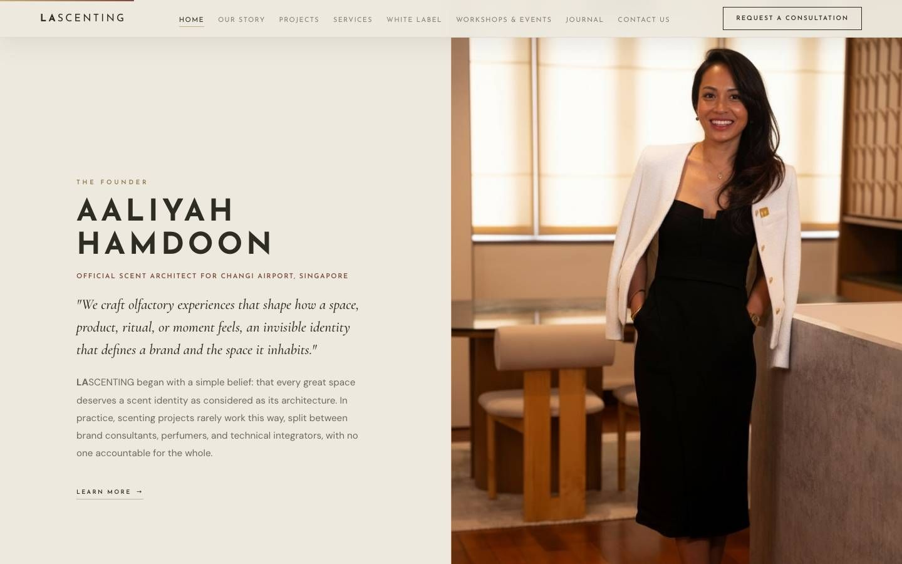
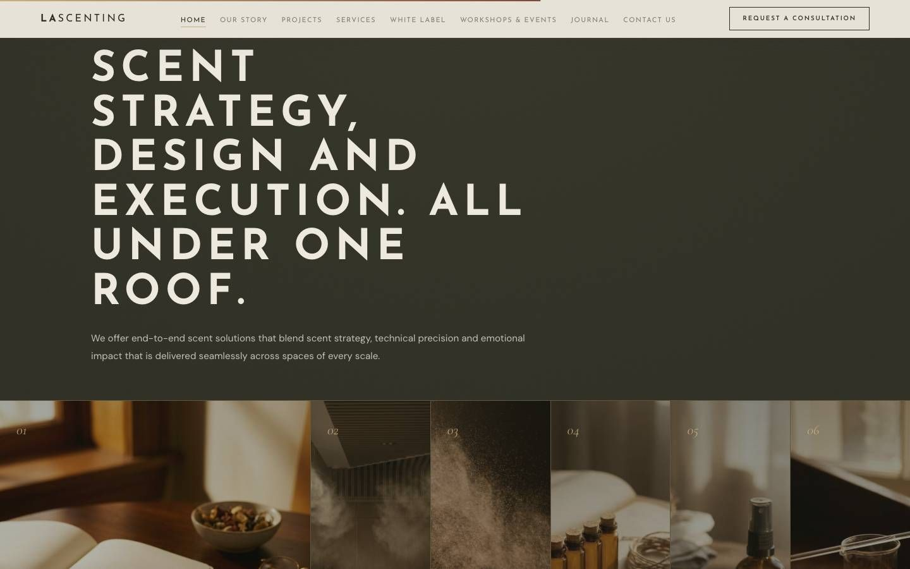
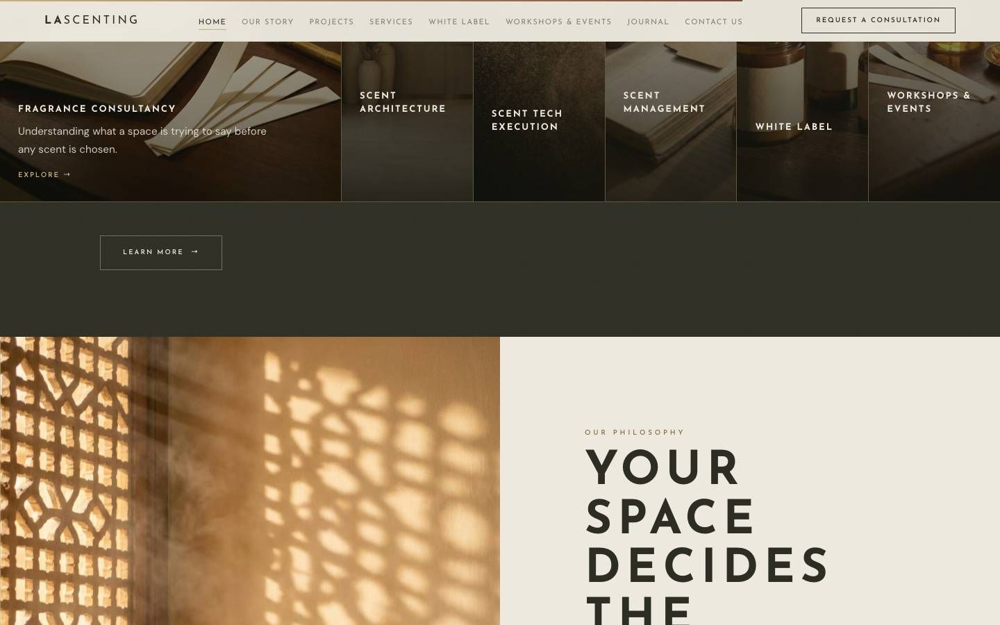
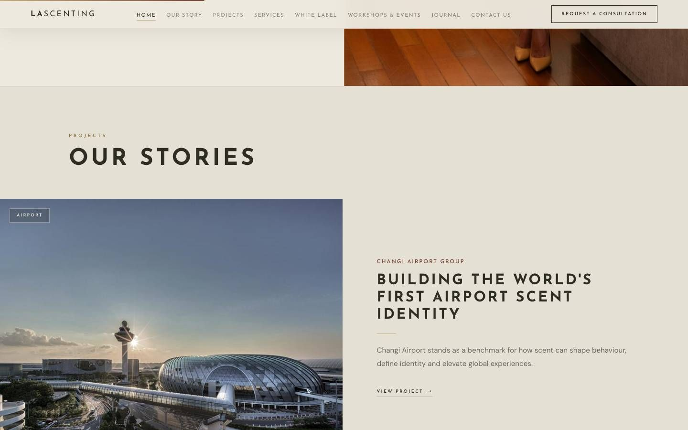

LA Scenting.
A website for a scent design studio that sells to airports, hotels, offices and events. It had to make an invisible product feel expensive, then hand the buyer the evidence to argue for it.
My scope: the site's design and build, its content architecture, and the journal, a research-led article programme written in the founder's voice. The photography and the client list are LA Scenting's own.
Make scent visible.
Nobody can smell a website. The people who buy scent design for a terminal, a hotel lobby or a head office still have to feel the difference before they book a sample, and then sell the idea to a finance director.
So the site does two jobs. The first screens set a mood a buyer remembers. Everything below them builds the case: projects, services, and a journal that answers the questions a sceptical buyer asks.
Quiet luxury, with room to breathe.
Cream, sand, brass and a deep olive, with three typefaces that each have one job: wide-tracked capitals for statements, a classical italic for the founder's voice, and a plain sans for reading.
The hero film runs under a slow haze drawn on a canvas, so the page seems to breathe before anyone scrolls. Sections alternate light and dark the way a good hotel moves you from lobby to lounge.



Evidence, not perfume copy.
The journal is sorted by what a buyer needs to know: the science, the evidence, designing with scent, and operations.
Each article runs about 650 words and anchors its claims in published research. A short abstract goes out on the founder's LinkedIn and links back, so every post sends a buyer to the site rather than keeping them in the feed.

Hand-built, not templated.
A static Astro site with hand-built components and the haze written in canvas. The design, the words and the code came from one person, so the brief never had to survive a hand-off.